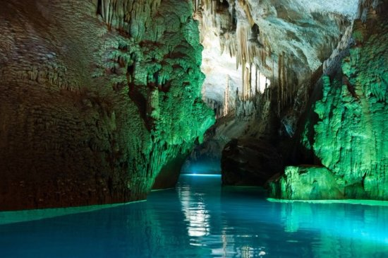
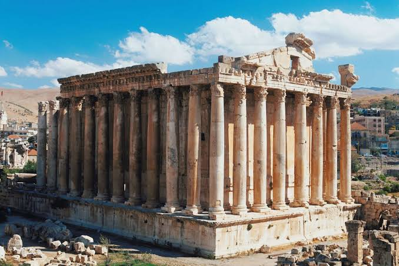

Lebanon is the light-house of Arab culture; without it, Arab intellect would live in darkness.

The Jeita Grotto is the result of millions of years of natural processes, primarily the dissolution of limestone by slightly acidic water. This phenomenon, known as karstification, occurs when rainwater, enriched with carbon dioxide from the atmosphere and soil, seeps into the ground and reacts with the limestone. Over time, this process carved out the intricate network of caves, chambers, and tunnels that make up the grotto.

In a world racing toward the future, few places demand we pause and look back quite like Baalbek. Tucked into Lebanon’s eastern Beqaa Valley, near the border with Syria and just 67 kilometers from Beirut, this modern-day city quietly cradles one of the greatest archaeological wonders of the ancient world. Yet, despite its colossal ruins, Baalbek rarely finds the spotlight it deserves—overshadowed by modern conflict, regional instability, and the global indifference toward the preservation of heritage in the Middle East.